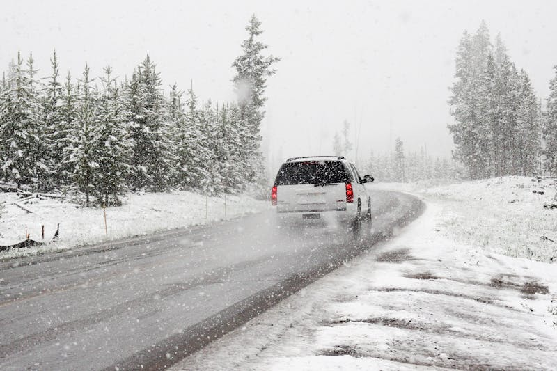
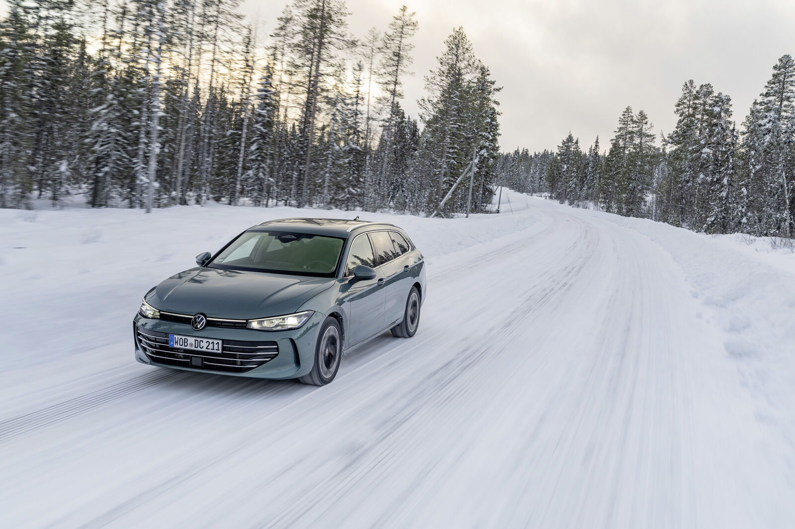

Ferienhaus · Sør-Varanger bei Kirkenes, Norwegen
Lodge in der Arktis
Direkt am Wasser in Sør-Varanger
Ein großzügiges Ferienhaus für bis zu 10 Gäste in Sør-Varanger – mit Sauna, Kamin, Terrasse und Balkon am Wasser. Ideal als Basis für Nordlichter, Grenzregion und die Stille des äußersten Nordostens.
Willkommen in Sør-Varanger
Das Haus liegt in Sør-Varanger – am Pasvikelv, etwa eine Autostunde südlich von Kirkenes im äußersten Nordosten Norwegens.
Mit 3 Schlafzimmern, 7 Betten, 3 Badezimmern und Platz für bis zu 10 Gäste bietet es einen privaten Rückzugsort direkt am Wasser: Sauna, Kamin, Terrasse, Balkon und schnelles WLAN über Glasfaser. Check-in ab 16:00 Uhr, Check-out um 11:00 Uhr; Mindestaufenthalt 2 Nächte.
Highlights
Das Haus auf einen Blick
Ausgewählte Besonderheiten des Hauses in Sør-Varanger am Wasser.
Direkt am Wasser
Lage am Pasvikelv in Sør-Varanger – Wasser, Weitblick und Ruhe vor der Haustür.
Sauna & Kamin
Entspannen nach Ausflügen: eigene Sauna, Kamin innen und Feuerstelle draußen.
Terrasse & Balkon
Außenbereiche zum Verweilen – mit Blick auf Wasser und nordische Natur.
WLAN / Glasfaser
Schnelles Internet für Alltag, Streaming und Homeoffice am Arbeitsplatz.
Voll ausgestattete Küche
Küche mit allem Nötigen für längere Aufenthalte und gemeinsames Kochen.
Parkplatz & TV
Parkplatz am Haus, Fernseher, Waschmaschine und Arbeitsplatz im Haus.
Ausstattung
Komfort für Ihren Aufenthalt
Übersicht der bestätigten Ausstattung – offene Punkte sind als „Auf Anfrage“ gekennzeichnet.
Wohnbereich
- Gemütliche Sitzecke mit Kamin innen (Fireplace)
- Feuerstelle draußen
- Fernseher (TV)
- Sauna im Haus
Küche
- Voll ausgestattete Küche
- Geschirr und Küchenutensilien
- Kaffeemaschine – Auf Anfrage
Schlafzimmer
- 3 Schlafzimmer · 7 Betten · max. 10 Gäste
- Bettwäsche ist enthalten
Badezimmer
- 3 Badezimmer
- Handtücher sind vorhanden
- Föhn verfügbar
Außen & Lage
- Terrasse und Balkon
- Parkplatz am Haus
- Direkt am Wasser · Vaggeveien 12, Sør-Varanger
Allgemein
- WLAN / Glasfaser
- Waschmaschine
- Arbeitsplatz (Workspace)
- Check-in ab 16:00 Uhr · Check-out um 11:00 Uhr
- Haustiere – Auf Anfrage
Grundriss
Raumaufteilung der Lodge
Erd- und Dachgeschoss auf einen Blick – groß und übersichtlich wie auf einer Chalet-Detailseite. Per Klick vergrößern.
·
PDF herunterladen
· Weitere Unterlagen im Archiv unter
assets/haus-fotos/Unterlagen_zum_Haus/.
Galerie
Impressionen
Preise & Verfügbarkeit
Ihr Aufenthalt
Unverbindliche Richtpreise in Euro (Stand Mai 2026). Saisonale Abweichungen möglich – genaue Beträge per Anfrage oder im Airbnb-Inserat.
Nebensaison
ca. 286 € / Nacht
Für ruhige Reisezeiten und längere Aufenthalte.
Nordlicht & Winter
ca. 2.000 € / Woche
ca. 286 € pro Nacht · 7 Nächte
Beliebte Reisezeit für Schnee, Nordlichter und Wintererlebnisse.
Sommer
ca. 286 € / Nacht
Ideal für Mitternachtssonne, Ausflüge und Natur.
Hinweise zur Buchung
- Mindestaufenthalt: 2 Nächte.
- Check-in: ab 16:00 Uhr.
- Check-out: 11:00 Uhr.
- Reinigungsgebühr: Auf Anfrage.
- Kinder: Regelung bitte vom Gastgeber ergänzen.
- Haustiere: Auf Anfrage.
Gästestimmen
Bewertungen
Beispielzitate – später durch freigegebene Bewertungen aus Airbnb oder Direktbuchungen ersetzen.
„Ein ruhiger Ort, perfekt nach einem Tag voller Ausflüge rund um Kirkenes.“
Beispielbewertung ·
„Sehr gute Basis für Nordlichter, Natur und entspannte Abende im Haus.“
Beispielbewertung ·
„Unkomplizierte Kommunikation und alles Wichtige schnell erreichbar.“
Beispielbewertung ·
Anfahrt & Lage
Sør-Varanger bei Kirkenes
Das Haus liegt in Sør-Varanger an der Vaggeveien 12, direkt am Wasser am Pasvikelv. Kirkenes mit Flughafen und Einkaufsmöglichkeiten ist per Auto gut erreichbar.
Adresse: Vaggeveien 12, Sør-Varanger, Norwegen
Route auf Google MapsAnreise
Mit dem Mietwagen frei unterwegs
Von Kirkenes nach Sør-Varanger – in unmittelbarer Nähe zur finnischen Grenze und perfekt als Basis für Ausflüge nach Finnland. Ein eigenes Auto macht Ihren Aufenthalt deutlich entspannter.
Unsere Empfehlung
Für dieses Ferienhaus empfehlen wir ausdrücklich, ein Auto zu mieten – idealerweise direkt am Flughafen Kirkenes (KKN / Høybuktmoen) bei Ankunft abholen und bei Abreise zurückgeben.
Die Lodge liegt in Sør-Varanger am Pasvikelv – etwa 45–60 Minuten mit dem Auto südlich von Kirkenes. Öffentliche Verbindungen sind dünn; mit dem Mietwagen sind Sie unabhängig: Nordlichter jagen, Fjorde und Tundra erkunden, in Kirkenes einkaufen, Tagesausflüge in die finnische Nachbarschaft und die Grenzregion Richtung Nordkap genießen – im Winter wie im Sommer, ohne auf Busfahrpläne zu warten.
Besonders für Familien und Gruppen bis 10 Personen lohnt sich die Flexibilität: gemeinsam anreisen, Einkäufe transportieren, Ausflüge spontan planen. Am Flughafen Kirkenes stehen mehrere große Ketten und lokale Partner bereit – Abholung in der Ankunftshalle, Rückgabe vor dem Abflug, oft in wenigen Minuten erledigt.
Am Flughafen KKN buchbar u. a. bei
- Avis
- Hertz
- Sixt
- Europcar
- Budget
- Thrifty
- National / Enterprise
Kompaktklasse
Kleinwagen · z. B. Toyota Yaris
Sparsam für Paare oder kleine Familien – gut für Sommerstraßen und den Weg Kirkenes ↔ Sør-Varanger.
- ca. pro Tag
- ab 65 €
- ca. pro Woche
- ab 365 €

SUV / 4×4
Geländetauglich · z. B. Toyota RAV4
Unsere Top-Empfehlung für Winter, Schnee und längere Touren in der Arktis – mehr Komfort und Sicherheitsgefühl auf norwegischen Straßen.
- ca. pro Tag
- ab 95 €
- ca. pro Woche
- ab 565 €

Kombi / Mittelklasse
Stationswagen · z. B. VW Passat Variant
Viel Kofferraum für Vorräte aus Kirkenes, Kindersitze und Gepäck – ideal für Gruppen mit mehr Gepäck, ohne Minibus.
- ca. pro Tag
- ab 83 €
- ca. pro Woche
- ab 490 €
Praktische Hinweise
- Flughafen: Kirkenes Airport Høybuktmoen (KKN) – Mietwagen-Schalter in der Ankunftshalle; Vergleichsportale: DiscoverCars, autoprio.no, momondo.no.
- Fahrt zur Lodge: ca. 45–60 Min. nach Sør-Varanger (Vaggeveien 12) – Route über E6/E105; im Winter Winterreifen/4×4 erwägen.
- Früh buchen: In der Nordlicht-Saison (Okt.–März) und im Sommer sind Fahrzeuge schnell ausgebucht – Reservierung einige Wochen im Voraus lohnt sich.
Alle Preise sind unverbindliche Richtwerte in Euro (Schätzungen, als „ca.“ gekennzeichnet) für 2025/2026 – umgerechnet aus norwegischen Angeboten mit Wechselkurs ca. 1 EUR ≈ 11,5 NOK (Stand Mai 2026). Abhängig von Saison, Versicherung, Kilometerpaket und Buchungszeitpunkt. Recherche u. a. DiscoverCars.no, autoprio.no, Budget.no, KAYAK; am Flughafen Kirkenes buchbar. Bitte aktuelle Preise direkt beim Anbieter prüfen.
Buchung
Verfügbarkeit anfragen
Unverbindliche Anfrage – im Prototyp ohne Versanddienst. Nach dem Absenden erscheint eine lokale Bestätigung.
Kontakt
Persönlich erreichbar
Telefon, E-Mail oder WhatsApp können hier ergänzt werden. Für Vertrauen verweisen wir zusätzlich auf das bestehende Airbnb-Inserat.
- E-Mail: Auf Anfrage
- Telefon: Auf Anfrage
- WhatsApp: Auf Anfrage